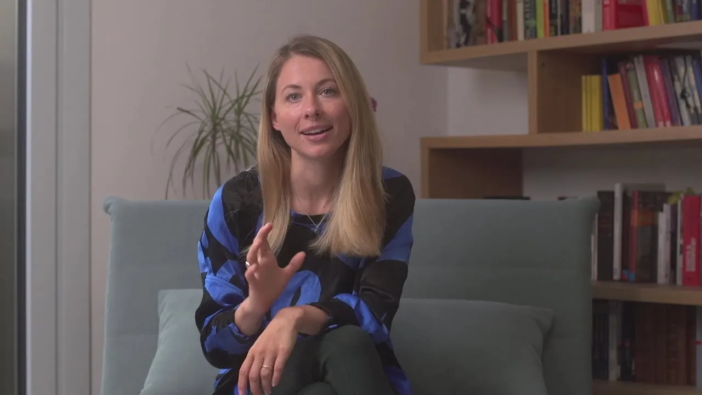

Es gibt Dinge, die wir verstehen können. Und Dinge, die wir erfahren müssen.
Womb & Heart bewegt sich dazwischen. Zwischen Wissen und Verkörperung. Zwischen Selbstbestimmung und Hingabe.
Zwischen dem, was wir über den Körper wissen – und dem, was wir nur erfahren können, wenn wir beginnen, ihm zuzuhören.
Geburt ist für mich ein solcher Raum. Yoga Nidra auch.
Beides lädt auf unterschiedliche Weise dazu ein, tiefer zu gehen: den Körper genauer wahrzunehmen, seinen Signalen zu vertrauen, mit Zuständen von Intensität und tiefer Ruhe zu arbeiten – und die Grenzen dessen zu erforschen, was wir gewöhnlich für unser Selbst halten.
Für Frauen, die verstehen wollen – und erfahren.
Geburt kannst du nicht planen. Aber du kannst dich auf sie vorbereiten.
Es gibt heute unglaublich viel Wissen über Geburt. Podcasts, Bücher, Geburtsberichte, Hypnobirthing, Atemtechniken, Checklisten.
Was aber hilft mir wirklich, wenn Geburt beginnt?

Yoga Mama ist meine Antwort darauf.
Eine umfassende Online-Geburtsvorbereitung, die Wissen nicht gegen Intuition und Selbstbestimmung nicht gegen Hingabe ausspielt.
WISSEN
Verstehen, wie Geburt funktioniert. Fragen stellen, entscheiden, Nein sagen.
ERFAHRUNG
Eine Erfahrung, die sich nicht vollständig denken, planen oder kontrollieren lässt.
KÖRPER
Wir gehen in den Körper und begegnen Intensität bereits vor der Geburt.
KNOW · EMBODY · REGULATE · SURRENDER
KNOW
Verstehe die Physiologie von Geburt. Kenne deine Möglichkeiten, Interventionen und Rechte. Triff informierte Entscheidungen.
EMBODY
Lerne deinen Körper nicht nur theoretisch kennen. Erforsche Becken, Beckenboden, Bewegung, Positionen – und entwickle Vertrauen in deine eigene Wahrnehmung.
REGULATE
Lerne, was in deinem Körper geschieht, wenn Intensität steigt. Arbeite gezielt mit deinem Nervensystem und erweitere dein Repertoire, um Aktivierung zu begegnen, ohne ihr sofort entkommen zu müssen.
SURRENDER
Erforsche Loslassen als körperliche Fähigkeit. Übe, Intensität zuzulassen und Kontrolle abzugeben – ohne dabei deine Selbstbestimmung abzugeben.
SOVEREIGNTY ? SURRENDER
Geburt enthält für mich ein fundamentales Spannungsfeld.
SOVEREIGNTY
Wissen. Orientierung. Grenzen. Entscheidungen. Die Fähigkeit, für dich und dein Baby einzustehen.
SURRENDER
Loslassen. Reagieren statt planen. Dem Körper Raum geben.
BEIDES
Yoga Mama bereitet dich auf beides vor.
Werkzeuge werden nicht dadurch verkörpert, dass wir von ihnen wissen.
In den Birth Rehearsals kommen die einzelnen Elemente zusammen – nicht als Techniken zum Merken, sondern als Erfahrung.
KÖRPER
Bewegung. Positionen. Atem. Stimme.
NERVENSYSTEM
Fokus. Regulation. Intensität. Loslassen.
PRAXIS
So wird aus Wissen Erfahrung – und aus einzelnen Tools eine verkörperte Praxis.
Nicht auf eine bestimmte Geburt. Sondern auf neue Möglichkeiten, ihr zu begegnen.
Yoga Mama verspricht keine „perfekte“ Geburt. Aber Vorbereitung kann verändern, wie du Geburt erlebst.
VERTRAUEN
Mehr Vertrauen in deinen Körper.
KAPAZITÄT
Mehr Kapazität für Intensität.
FREIHEIT
Mehr Freiheit, auf das zu reagieren, was tatsächlich geschieht.
Während du dein Baby trägst, darfst auch du getragen sein.
Mothering the Mother ist eine zwanzigminütige Yoga-Nidra-Praxis für deine Schwangerschaft.
Schwangerschaft ist voller Dinge, die du tun sollst. Informieren. Vorbereiten. Entscheiden. Bewegen. Optimieren.
Diese Praxis verlangt nichts von dir.
Du darfst liegen und empfangen. Vom Tun ins Sein kommen. Der Yin-Energie Raum geben, die nicht danach fragt, was du noch leisten kannst.
Vielleicht ist Ruhe in einer Welt, die ständig mehr von uns will, tatsächlich ein kleiner Akt der Rebellion.
Kostenlos als Audio.
Practice it. Teach it.
Yoga Nidra lässt sich nicht allein über Bücher oder Konzepte verstehen. Die Praxis muss erfahren werden.
Beginne mit deiner eigenen Erfahrung – oder gehe tiefer und lerne, Yoga Nidra fundiert zu unterrichten.
Lie down. Listen. Notice.
Eine Sammlung geführter Yoga-Nidra-Praxen für unterschiedliche Momente und Lebensphasen.
Zum Ausruhen und Regenerieren. Um deinen Körper wieder deutlicher wahrzunehmen. Um innere Zustände zu beobachten, statt sofort auf sie reagieren zu müssen.
Und manchmal einfach, um zwanzig Minuten lang zu liegen und nichts zu tun.
Don’t just read the script.
Yoga Nidra zu unterrichten bedeutet mehr, als eine geführte Entspannung vorzulesen.
In meiner Yoga-Nidra-Ausbildung lernst du die Praxis von Grund auf verstehen: ihre Wurzeln, unterschiedliche Traditionen und Methoden, den Aufbau einer Praxis, Sprache und Stimme – und die Frage, was wir mit Yoga Nidra eigentlich tun.
Damit du nicht nur weißt, was du sagen sollst. Sondern verstehst, warum.
Für Yogalehrer:innen, die Yoga Nidra fundiert, eigenständig und verantwortungsvoll unterrichten wollen.
Yoga Nidra in der Schwangerschaft
Schwangerschaft verändert den Körper, die Wahrnehmung und häufig auch die Beziehung zu uns selbst.
In meinem Buch verbinde ich die traditionelle Praxis des Yoga Nidra mit dieser besonderen Erfahrung – fundiert, zugänglich und mit konkreten Übungen für die eigene Praxis.
Für Fragen, die keine schnellen Antworten brauchen.
Im Journal schreibe und spreche ich über Geburt, Körper, Yoga Nidra und Mutterschaft – dort, wo Wissenschaft und Erfahrung nicht ineinanderpassen. Nicht alles ist eindeutig. Genau dort wird es interessant.
WAS FRAUEN SAGEN.
Hier kommt das echte Feedback einer Teilnehmerin über ihre Erfahrung mit Yoga Mama oder der Begleitung durch Womb & Heart.
Hier kann ein zweites authentisches Feedback stehen – zum Beispiel über mehr Ruhe, Vertrauen und Sicherheit während der Schwangerschaft.
Hier kann später eine echte Stimme aus einer Yoga-Nidra-Erfahrung stehen – persönlich, ruhig und möglichst in den eigenen Worten der Teilnehmerin.
Diese vierte Folie kann eine weitere Erfahrung mit Nadjas Arbeit zeigen und später durch das tatsächliche Kundenfeedback ersetzt werden.
WOMB & HEART
Für Frauen, die verstehen wollen – und erfahren.
Birth · Yoga Nidra · Knowledge · Practice